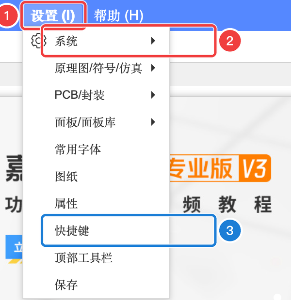
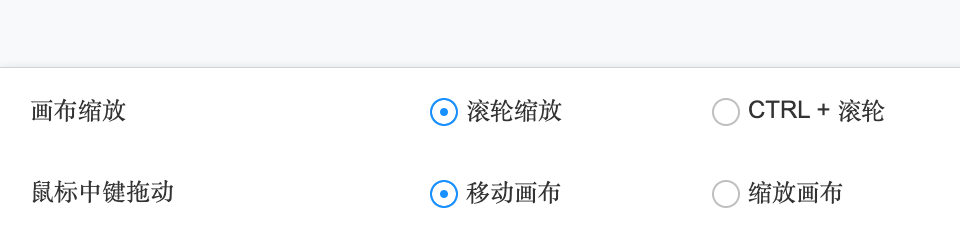
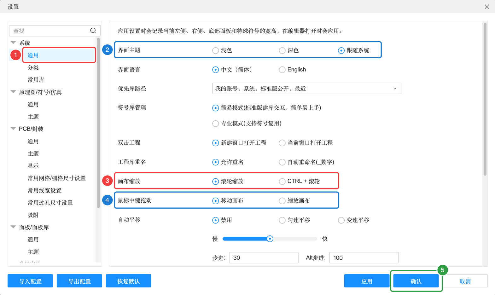
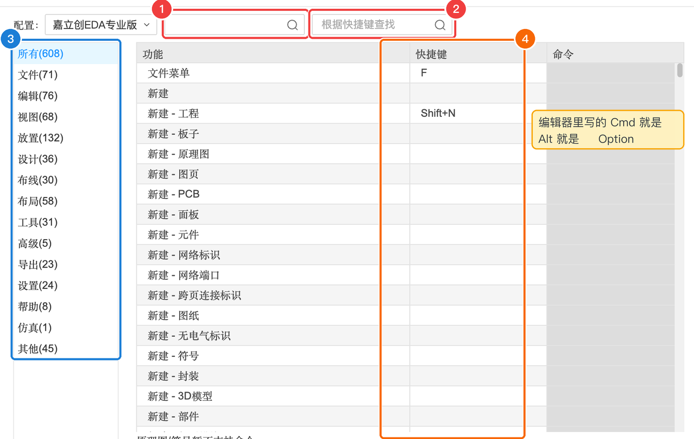
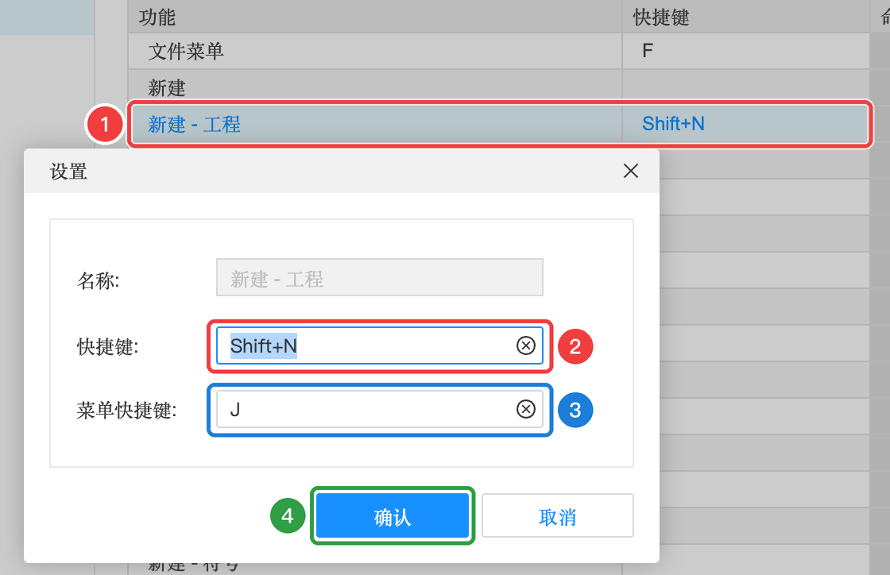

0.4 键盘、鼠标与快捷键（Mac / Windows）
这一节把键盘、鼠标、触控板一次讲清楚：键盘上那些键叫什么、编辑器里怎么写；单字母快捷键为什么没反应；用鼠标还是触控板，怎么设置最顺手；哪些快捷键会和系统“撞车”。内容会按你在右上角选的系统（Mac / Windows）显示。
认识键盘上的修饰键#
Mac 键盘上印的是符号，比如 ⌘Z 表示“按住 ⌘ 键不放，再按 Z”。先认识一下这几个符号：
| 符号 | 键名 | 嘉立创EDA 里写作 | 相当于 Windows 的 | 在键盘哪里 |
|---|---|---|---|---|
| ⌘ | Command | Cmd | Ctrl | 空格键左右两边 |
| ⌥ | Option | Alt | Alt | ⌘ 的外侧 |
| ⌃ | Control | Ctrl | （很少用到） | 左下角，fn 旁边 |
| ⇧ | Shift | Shift | Shift | 左右两侧 |
| delete | 删除 | Backspace | Backspace | 右上角 |
| fn delete | 向后删除 | Delete | Delete | 组合键 |
| return | 回车 | Enter | Enter | 右侧 |
本教程写快捷键时用按键的名字，比如 CtrlZ 表示“按住 Ctrl 不放，再按 Z”。常用的几个修饰键：
| 按键 | 嘉立创EDA 里写作 | 常用来做什么 | 在键盘哪里 |
|---|---|---|---|
| Ctrl | Ctrl | 撤销、复制、粘贴、保存等通用操作 | 左下角、右下角 |
| Alt | Alt | 画图工具：Alt+W 导线、Alt+R 矩形…… | 空格键两边 |
| Shift | Shift | 组合键、多选 | 左右两侧 |
| Delete | Delete | 删除选中的对象 | 回车键上方附近 |
| Enter | Enter | 确认 | 右侧 |
下面这个键盘图可以互动，把鼠标移到键帽上看看每个键在嘉立创EDA 里常用来做什么（会按你选的系统显示 Mac 或 Windows 键盘）：
最容易踩的坑#
坑 1：中文输入法下，单字母快捷键没反应#
嘉立创EDA 有很多单个字母的快捷键：K 适应全部、Q 切换单位、X Y 翻转、M 移动……如果你当前用的是中文输入法，按下字母会被输入法当成拼音，快捷键就不起作用。
坑 2：F1 ~ F12 要配合 fn#
Mac 键盘最上面一排默认是亮度、音量等功能键。编辑器里的 F1（帮助）、F4（重复上一步）需要按 fn + F1、fn + F4。如果你常用 F 键，可以在 Mac 的「系统设置 → 键盘 → 键盘快捷键 → 功能键」里打开“将 F1、F2 等键用作标准功能键”。
坑 3：删除用 delete 键就行#
编辑器快捷键表里“删除选中”写的是 Delete，Mac 键盘上没有单独的 Delete 键。不用担心：选中对象后直接按 Mac 的 delete 键就能删除（本教程在 V4.1.93 里实测有效）。
坑 2：笔记本的 F 键可能要配合 Fn#
很多 Windows 笔记本最上面一排默认也是亮度、音量键，要按 Fn + F1 才是 F1。不同品牌切换方法不一样（常见是 Fn + Esc 锁定），以你的电脑说明为准。
鼠标还是触控板？#
画电路板时要不停地缩放（看细节、看全局）和平移（移动视野），所以画布操作是否顺手非常重要。
我们在 V4.1.93 里逐一测试了各种操作的效果（编辑器设置为默认的「滚轮缩放」时）：
| 操作 | 效果 | 评价 |
|---|---|---|
| 🖱️ 鼠标滚轮上下滚 | 以鼠标位置为中心缩放 | ✅ 好用 |
| 🖱️ 按住右键拖动 | 平移画布 | ✅ 好用（只点右键不拖动 = 弹出右键菜单） |
| 🖱️ 按住中键（滚轮）拖动 | 平移画布 | ✅ 好用 |
| 🖱️ 按住左键在空白处拖动 | 框选（选中框里的东西），画布不动 | 正常 |
| ⌨️ 按 K | 适应全部：缩放到刚好看到整张图 | ✅ 迷路救星 |
| ✌️ 触控板双指上下滑 | 缩放（和鼠标滚轮一样） | ⚠️ 很灵敏，容易缩过头 |
| ✌️ 触控板双指左右滑 | 左右平移 | ✅ |
| 🤏 触控板双指捏合 / 张开 | 上下平移，不是缩放 | ❌ 和直觉相反 |
（以上在 Mac 的 Chrome 上实测。Windows 笔记本的“精确式触控板”在 Chrome 里的手势行为原理相同，一般效果一致；如有不同以实际为准。）
可以看到，默认设置是为鼠标设计的。用触控板的话，双指上下滑会缩放、捏合反而会平移，很别扭——别急，改一个设置就好了。
触控板用户：改一个设置就顺手了#
编辑器的「画布缩放」有两种模式。把它改成「CTRL + 滚轮」后，触控板就变成和看照片、看地图一样的操作习惯：
| 触控板操作 | 默认「滚轮缩放」 | 改为「CTRL + 滚轮」后 |
|---|---|---|
| ✌️ 双指上下滑 | 缩放 | 上下平移 ✅ |
| ✌️ 双指左右滑 | 左右平移 | 左右平移 ✅ |
| 🤏 双指捏合 / 张开 | 上下平移 | 缩小 / 放大 ✅ |
| ⌘ + 双指上下滑 | 上下平移 | 缩放 |
先在下面的模拟画布里亲手试一试两种模式的区别（用你自己的鼠标或触控板，在黑色区域里操作）：
修改步骤#
- 点顶部菜单「设置」
- 把鼠标移到「系统」上，在弹出的子菜单里点「通用」

- 在打开的设置窗口里找到「画布缩放」这一行，选「CTRL + 滚轮」
- 点右下角「确认」，马上生效

默认：滚轮缩放触控板推荐：CTRL + 滚轮顺便认识一下这个「系统 → 通用」设置窗口里的其他选项，图中的编号对应下表（每一项的完整说明见 3.1）：

| 编号 | 设置项 | 含义（大白话） | 建议 |
|---|---|---|---|
| 1 | 通用（左侧目录） | 设置窗口左边是分类目录，系统、原理图、PCB 等各有自己的设置 | — |
| 2 | 界面主题 | 浅色 / 深色 / 跟随系统（跟着电脑的外观设置走） | 本教程截图用浅色，想和截图一致就选浅色 |
| 界面语言 | 中文（简体）或 English | 中文 | |
| 优先库路径 | 搜索元件时，优先在哪些库里找、按什么顺序排 | 保持默认 | |
| 符号库管理 | 「简易模式」建元件更简单；「专业模式」支持一个符号给多个元件复用 | 新手保持简易模式 | |
| 双击工程 | 在工程列表里双击工程时用哪种方式打开 | 保持默认 | |
| 工程库重名 | 工程库里出现同名元件时，允许重名还是自动加 “_数字” | 保持默认 | |
| 3 | 画布缩放 | 滚轮缩放：滚轮 = 缩放；CTRL + 滚轮：滚轮 = 平移，按住 Ctrl（或触控板捏合）+ 滚动 = 缩放 | 鼠标用户：滚轮缩放；触控板用户：CTRL + 滚轮 |
| 4 | 鼠标中键拖动 | 按住滚轮拖动时是“移动画布”还是“缩放画布” | 移动画布 |
| 自动平移 | 拖动东西到画布边缘时，画布是否自动跟着移动，以及移动的快慢 | 保持默认 | |
| 5 | 确认 / 应用 / 取消 | 「确认」保存并关闭；「应用」保存但不关窗口；「取消」放弃修改 | — |
会和系统“撞车”的快捷键#
嘉立创EDA 的快捷键是按 Windows 习惯设计后自动换成 ⌘ 的，有几个刚好和 Mac 系统或浏览器自己的快捷键重复。系统级的快捷键优先级更高，网页拦不住，按下去会触发系统功能：
| 快捷键 | 编辑器里的功能 | 在 Mac 上实际会发生 | 建议 |
|---|---|---|---|
| ⌘ Q | 显示 / 隐藏编号和网络名（PCB） | ❌ 退出整个 Chrome（如果开启了“退出前警告”，会提示你按住） | 千万别按；需要这个功能就改成别的键（见下方） |
| ⌘ H | 选择连接的铜皮（PCB） | ❌ 隐藏 Chrome 窗口（点 Dock 图标能找回来） | 改成别的键，或用右键菜单 |
| F11 | 全屏 | Mac 默认是“显示桌面” | 用 Chrome 自己的全屏：⌃ ⌘ F |
Num+ Num- Num* | 切换图层、调整等长间隙（PCB） | MacBook 没有数字小键盘，按不了 | 用图层面板点击切换 |
| ⌘ W / ⌘ T / ⌘ N | （编辑器没用到） | 浏览器：关闭标签页 / 新标签页 / 新窗口 | 小心手滑按到 ⌘ W 把编辑器关掉 |
编辑器在浏览器里运行，有些按键会先被浏览器或系统处理掉：
| 快捷键 | 可能发生什么 | 建议 |
|---|---|---|
| Ctrl W | 浏览器：关闭当前标签页 | 小心手滑把编辑器关掉 |
| Ctrl T / Ctrl N | 浏览器：新标签页 / 新窗口 | 编辑器没用到，不影响 |
| F11 | 浏览器全屏（编辑器的“全屏”功能也是它） | 可以直接用，再按一次退出 |
Num+ Num- Num* | 切换图层、调整等长间隙（PCB） | 没有数字小键盘的笔记本按不了，用图层面板点击切换 |
自己修改快捷键#
不顺手的快捷键都可以改。打开「设置 → 快捷键」：

| 编号 | 区域 | 作用 |
|---|---|---|
| 1 | 按功能查找 | 输入功能名称，比如“撤销”，查它的快捷键 |
| 2 | 根据快捷键查找 | 反过来，输入按键，看它绑定了什么功能（想知道“K 是干嘛的”就在这里查） |
| 3 | 分类 | 按菜单分类浏览：文件、编辑、视图、放置、设计、布线…… |
| 4 | 快捷键一栏 | 当前绑定的按键；空白表示没有快捷键 |
想修改某一条：
- 在列表里双击要改的那一行
- 在弹出的小窗口里，点「快捷键」输入框，直接在键盘上按下你想要的新组合键（点右边的 ⓧ 可以清空）
- 「菜单快捷键」是打开菜单后按的那个字母，一般不用改
- 点「确认」，再点设置窗口的「确认」保存

屏幕太小怎么办#
- 全屏：按 ⌃ ⌘ F，或点 Chrome 窗口左上角的绿色圆点按 F11，能多出不少空间。
- 收起面板：编辑器默认快捷键 [ 收起/展开左侧面板，] 右侧面板，\ 底部面板。需要时再展开。
- 外接显示器：如果有的话，画 PCB 时会舒服很多。
本节检查清单#
- 知道
Cmd= ⌘，Alt= ⌥ Option，Ctrl= ⌃ Control知道 Ctrl、Alt、Shift 在键盘的哪里 - 用编辑器时会把输入法切到英文
- 准备好了鼠标；或者（触控板用户）已把「画布缩放」改成「CTRL + 滚轮」
- 记住：迷路按 K，后悔按 ⌘Z，随手 ⌘S
- 记住：不要按 ⌘ Q 和 ⌘ H